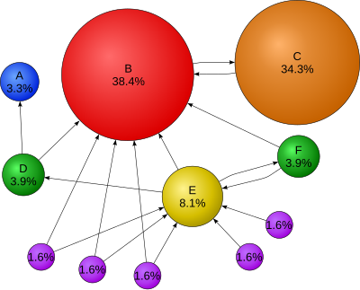
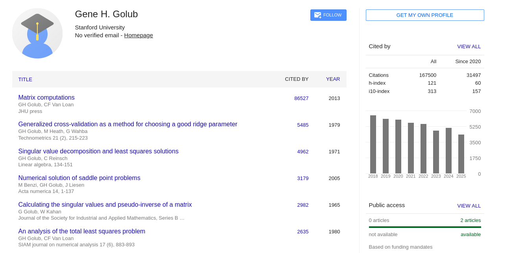
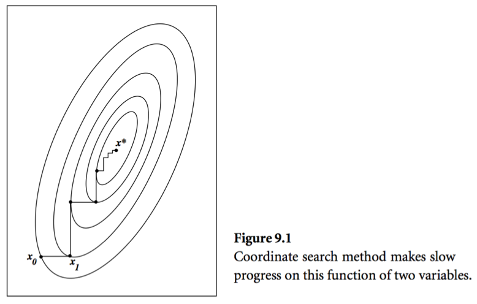
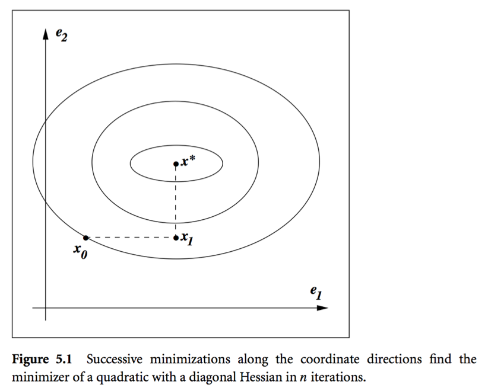

Iterative Methods
Motivation
The two problems we’ve examined so far, \(\mathbf{A} \mathbf{x} = \mathbf{b}\) and \(\underset{\beta}{\mathrm{min}} \|\mathbf{y} - \mathbf{X}\beta\|^{2}\), both have closed form analytic solutions when considered over the real numbers. As the reader is likely aware, this is very rare in practice. We turn to iterative methods whenever neat formulas are unavailable.
| Direct | Iterative | |
|---|---|---|
| Flop Count | Fixed | Variable |
| Problem Size | Small/Moderate | Large |
| Structure | Dense | Sparse |
| Reusability | Usually only RHS can change | Both LHS and RHS can change |
The PageRank Problem
Background: Graph Theory
A graph is a mathematical abstraction for networks, which in turn model certain kinds of relations in applications (of graph theory). A graph is defined by
- a set of vertices \(V\) (or nodes or points or actors…), and
- a set of edges \(E = \{(x,y) : x,y \in V\}\) (or links or arcs or…).
Graphs can be directed or undirected, depending on whether the underlying relation is asymmetric or symmetric, respectively. As such, a graph can be specified using a (weighted) adjacency matrix \(\mathbf{A}\) with entries
\[ a_{ij} = \begin{cases} 1 & \text{if $(i,j) \in E$} \\ 0 & \text{otherwise} \end{cases}. \]
Here \((i,j)\) is a directed edge so that \(a_{ij}\) indicates whether node \(i\) (source) connects to node \(j\) (destination). Various important quantities can be derived from \(\mathbf{A}\)
- Out Degree: \(d_{i}^{+} = \sum_{j} a_{ij} = [\mathbf{A} \mathbf{1}]_{i}\) (if we treat rows of \(\mathbf{A}\) as the originating nodes).
- In Degree: \(d_{i}^{-} = \sum_{j} a_{ji} = [\mathbf{1}^{\top}\mathbf{A}]_{i}\).
- If \(\mathbf{A}\) is symmetric, the graph is undirected and so we only speak of the degree \(d_{i} = d_{i}^{+} = d_{i}^{-}\).
Spectral graph theory relates eigenvalues/eigenvectors of \(\mathbf{A}\) or its Laplacian to properties of graphs, and has important applications to high dimensional statistics and machine learning.
The Problem

Larry Page imagines a random surfer wandering on internet according to following rules:
- From page \(i\) with \(r_{i} > 0\):
- With probability \(1-p\) they choose a link on a page \(i\) uniformly at random and follow that link to the next page.
- With probability \(p\) they choose one page from the set of all \(n\) pages uniformly at random and proceed to that page.
- From a page \(i\) with \(r_{i} = 0\) (a dangling page), they randomly choose one page from the set of \(n\) pages uniformly at random, thus avoiding getting stuck at a page without outgoing links.
Here \(r_i\) is the out-degree of page \(i\) and \(\mathbf{A} \in \{0,1\}^{n \times n}\) the connectivity matrix of webpages with entries \[ a_{ij} = \begin{cases} 1 & \text{if page $i$ links to page $j$} \\ 0 & \text{otherwise} \end{cases}. \]
- \(n \approx 10^9\) in May 2017.
The description above defines a Markov chain on the space of \(n\) pages. Markov chain theory tells us that the stationary distribution of this Markov chain gives the ranks (probabilities) of each page.
A vector \(\mathbf{x}^{\top}\) is a stationary distribution if it is a top left eigenvector of the transition matrix \(\mathbf{P}\) corresponding to eigenvalue 1.
Equivalently it can be cast as the solution to the linear equation \[ (\mathbf{I}_{n} - \mathbf{P}^{\top}) \mathbf{x} = \mathbf{0}. \]
GE/LU will take \(2 \times (10^9)^3/3/10^{12} \approx 6.66 \times 10^{14}\) seconds \(\approx 20\) million years on a tera-flop supercomputer!
Numerical analyst Gene Golub called this the largest matrix computation in world.
Iterative methods come to the rescue.

Some Definitions
Iterative methods are algorithms that, starting from some initial guess, successively approximate a “good” solution to a problem. They are defined by an algorithm map \(F\) in the sense that, given \(\mathbf{x}_{k}\), we compute the next iterate \(x^{(k+1)}\) as
\[ x^{(k+1)} = F(x^{(k)}) \quad \text{for}~k \ge 0. \]
In the context of solving linear systems, the approximate solution \(\mathbf{x}^{(k)}\) is almost always distinct from the exact solution \(\mathbf{x}^{\ast}\) giving rise to the error
\[ \mathbf{w}^{(k)} = \mathbf{x}^{(k)} - \mathbf{x}^{\ast} \quad \text{(to distinguish from $\mathbf{e}_{j}$ notation for standard basis vectors)}. \]
Thus, an iterative method is said to be linear if there exists an iteration matrix \(\mathbf{C}\) describing the evolution of errors; that is, if
\[ \mathbf{w}^{(k+1)} = \mathbf{C} \mathbf{w}^{(k)} \]
- We can deduce that a linear iterative method converges if \(\lim_{k\to\infty} \mathbf{C}^{k} = \mathbf{0}\) (i.e. the error eventually goes to 0).
- Alternatively, the spectral radius of \(\mathbf{C}\) satisfies \(\rho(\mathbf{C}) < 1\).
This notion shows up everywhere in applied mathematics, and thus has many interpretations and perspectives.
- Roots: Find the root of \(G(x) = F(x) - x = 0\)
- Fixed Point: Find \(x\) such that \(x = F(x)\)
- Dynamical Systems: Find a stable steady state such that \(\lim_{k \to \infty} F(x^{(k)}) \to x\).
Stationary Methods
These methods are based on the idea of splitting \(\mathbf{A}\) into \(\mathbf{A} = \mathbf{D} + \mathbf{L} + \mathbf{U}\), where \(\mathbf{D}\) is diagonal, \(\mathbf{L}\) is lower triangular, and \(\mathbf{R}\) is upper triangular. (Why is this helpful?)
Jacobi Method
\[ x_i^{(k+1)} = \frac{b_i - \sum_{j=1}^{i-1} a_{ij} x_j^{(k)} - \sum_{j=i+1}^n a_{ij} x_j^{(k)}}{a_{ii}}. \]
Rewrite using splitting \(\mathbf{A} = \mathbf{L} + \mathbf{D} + \mathbf{U}\) \[ \mathbf{D} \mathbf{x}^{(k+1)} = - (\mathbf{L} + \mathbf{U}) \mathbf{x}^{(k)} + \mathbf{b}, \]
resulting in the iteration map (algorithm)
\[ \mathbf{x}^{(k+1)} = - \mathbf{D}^{-1} (\mathbf{L} + \mathbf{U}) \mathbf{x}^{(k)} + \mathbf{D}^{-1} \mathbf{b} = - \mathbf{D}^{-1} \mathbf{A} \mathbf{x}^{(k)} + \mathbf{x}^{(k)} + \mathbf{D}^{-1} \mathbf{b}. \]
- Convergence for diagonally dominant \(\mathbf{A}\).
- One round costs \(2n^2\) flops with an unstructured \(\mathbf{A}\).
- Gain over GE/LU if it converges in \(O(n)\) iterations.
- Huge savings for sparse or structured \(\mathbf{A}\). By structured, we mean the matrix-vector multiplication \(\mathbf{A} \mathbf{v}\) is fast (\(O(n)\) or \(O(n \log n)\)).
Gauss-Seidel
\[ x_i^{(k+1)} = \frac{b_i - \sum_{j=1}^{i-1} a_{ij} x_j^{(k+1)} - \sum_{j=i+1}^n a_{ij} x_j^{(k)}}{a_{ii}}. \]
Rewrite with splitting \((\mathbf{D} + \mathbf{L}) \mathbf{x}^{(k+1)} = - \mathbf{U} \mathbf{x}^{(k)} + \mathbf{b}\), that is, \[ \mathbf{x}^{(k+1)} = - (\mathbf{D} + \mathbf{L})^{-1} \mathbf{U} \mathbf{x}^{(k)} + (\mathbf{D} + \mathbf{L})^{-1} \mathbf{b}. \]
- Converges for any \(\mathbf{x}^{(0)}\) for symmetric and positive definite \(\mathbf{A}\).
- Convergence rate of Gauss-Seidel is the spectral radius of the \((\mathbf{D} + \mathbf{L})^{-1} \mathbf{U}\).
Krylov Methods
- Based on theory of Krylov subspaces.
- Idea: Look at the image of a vector \(\mathbf{b}\) under powers of a square matrix \(\mathbf{A}\).
- The vectors \(\mathbf{b}, \mathbf{A}\mathbf{b}, \mathbf{A}^{2}\mathbf{b}, \ldots \mathbf{A}^{k-1}\mathbf{b}\) form a subspace of rank at most \(k\).
- This idea can be exploited to accelerate/explain why iterative methods for linear systems are quite fast.
Conjugate Gradients
- Invented by Magnus Hestenes and Eduard Stiefel in 60s. See Hestenes and Stiefel (1952) for details.
- Idea: Solving \(\mathbf{A} \mathbf{x} = \mathbf{b}\) is equivalent to minimizing the quadratic function \(\frac{1}{2} \mathbf{x}^T \mathbf{A} \mathbf{x} - \mathbf{b}^T \mathbf{x}\).
- Consider a simple idea: coordinate descent, that is to update components \(x_j\) alternatingly. Same as the Gauss-Seidel iteration. Usually it takes too many iterations.
Kershaw’s results for a laser fusion problem.
| Method | Number of Iterations |
|---|---|
| Gauss-Seidel | 208,000 |
| Block SOR methods | 765 |
| Incomplete Cholesky conjugate gradient | 25 |
Message: Conjugate gradients and its variants are the top-notch iterative methods for solving huge, structured linear systems.

How can we avoid the issue in the picture?
- Define the residual \(\nabla f(\mathbf{x}) = \mathbf{A} \mathbf{x} - \mathbf{b} =: \mathbf{r}(\mathbf{x})\)
- A set of vectors \(\{\mathbf{p}^{(0)},\ldots,\mathbf{p}^{(t)}\}\) are said to be conjugate with respect to \(\mathbf{A}\) if \[ \begin{eqnarray*} \mathbf{p}_i^T \mathbf{A} \mathbf{p}_j = 0, \quad \text{for all } i \ne j. \end{eqnarray*} \]
- For example, eigen-vectors of \(\mathbf{A}\) are conjugate to each other. Why?
Conjugate Direction Method: Given a set of conjugate vectors \(\{\mathbf{p}^{(0)},\ldots,\mathbf{p}^{(n-1)}\}\), at iteration \(t\), we search along the conjugate direction \(\mathbf{p}^{(t)}\) \[ \begin{eqnarray*} \mathbf{x}^{(t+1)} = \mathbf{x}^{(t)} + \alpha^{(t)} \mathbf{p}^{(t)}, \end{eqnarray*} \] where \[ \begin{eqnarray*} \alpha^{(t)} = - \frac{\mathbf{r}^{(t)T} \mathbf{p}^{(t)}}{\mathbf{p}^{(t)T} \mathbf{A} \mathbf{p}^{(t)}} \end{eqnarray*} \] is the optimal step length.
- Theorem: In conjugate direction method, \(\mathbf{x}^{(t)}\) converges to the solution in at most \(n\) steps.
- Intuition: Look at a graph.

Conjugate Gradient Method: generate \(\mathbf{p}^{(t)}\) using only \(\mathbf{p}^{(t-1)}\) \[ \begin{eqnarray*} \mathbf{p}^{(t)} = - \mathbf{r}^{(t)} + \beta^{(t)} \mathbf{p}^{(t-1)}, \end{eqnarray*} \] where \(\beta^{(t)}\) is determined by the conjugacy condition \(\mathbf{p}^{(t-1)T} \mathbf{A} \mathbf{p}^{(t)} = 0\) \[ \begin{eqnarray*} \beta^{(t)} = \frac{\mathbf{r}^{(t)T} \mathbf{A} \mathbf{p}^{(t-1)}}{\mathbf{p}^{(t-1)T} \mathbf{A} \mathbf{p}^{(t-1)}}. \end{eqnarray*} \]
Algorithm (preliminary version)
Given \(\mathbf{x}^{(0)}\), \(\mathbf{A}\), and \(\mathbf{b}\).
- Initialize: \(\mathbf{r}^{(0)} \gets \mathbf{A} \mathbf{x}^{(0)} - \mathbf{b}\), \(\mathbf{p}^{(0)} \gets - \mathbf{r}^{(0)}\), \(t=0\)
- While \(\mathbf{r}^{(t)} \ne \mathbf{0}\)
- \(\alpha^{(t)} \gets - \frac{\mathbf{r}^{(t)T} \mathbf{p}^{(t)}}{\mathbf{p}^{(t)T} \mathbf{A} \mathbf{p}^{(t)}}\)
- \(\mathbf{x}^{(t+1)} \gets \mathbf{x}^{(t)} + \alpha^{(t)} \mathbf{p}^{(t)}\)
- \(\mathbf{r}^{(t+1)} \gets \mathbf{A} \mathbf{x}^{(t+1)} - \mathbf{b}\)
- \(\beta^{(t+1)} \gets \frac{\mathbf{r}^{(t+1)T} \mathbf{A} \mathbf{p}^{(t)}}{\mathbf{p}^{(t)T} \mathbf{A} \mathbf{p}^{(t)}}\)
- \(\mathbf{p}^{(t+1)} \gets - \mathbf{r}^{(t+1)} + \beta^{(t+1)} \mathbf{p}^{(t)}\)
- \(t \gets t+1\)
The initial conjugate direction \(\mathbf{p}^{(0)} \gets - \mathbf{r}^{(0)}\) is crucial.
Algorithm (economical version)
Saves one matrix-vector multiplication.
Given \(\mathbf{x}^{(0)}\), \(\mathbf{A}\), and \(\mathbf{b}\).
- Initialize: \(\mathbf{r}^{(0)} \gets \mathbf{A} \mathbf{x}^{(0)} - \mathbf{b}\), \(\mathbf{p}^{(0)} \gets - \mathbf{r}^{(0)}\), \(t=0\)
- While \(\mathbf{r}^{(t)} \ne \mathbf{0}\)
- \(\alpha^{(t)} \gets \frac{\mathbf{r}^{(t)T} \mathbf{r}^{(t)}}{\mathbf{p}^{(t)T} \mathbf{A} \mathbf{p}^{(t)}}\)
- \(\mathbf{x}^{(t+1)} \gets \mathbf{x}^{(t)} + \alpha^{(t)} \mathbf{p}^{(t)}\)
- \(\mathbf{r}^{(t+1)} \gets \mathbf{r}^{(t)} + \alpha^{(t)} \mathbf{A} \mathbf{p}^{(t)}\)
- \(\beta^{(t+1)} \gets \frac{\mathbf{r}^{(t+1)T} \mathbf{r}^{(t+1)}}{\mathbf{r}^{(t)T} \mathbf{r}^{(t)}}\)
- \(\mathbf{p}^{(t+1)} \gets - \mathbf{r}^{(t+1)} + \beta^{(t+1)} \mathbf{p}^{(t)}\)
- \(t \gets t+1\)
- Computation cost per iteration is one matrix vector multiplication: \(\mathbf{A} \mathbf{p}^{(t)}\).
- Consider the PageRank problem: \(\mathbf{A}\) has dimension \(n \approx 10^{9}\) but is highly structured (sparse + low rank). Each matrix vector multiplication should only take about \(O(n)\) flops.
Theory
- \(\mathbf{r}^{(t)}\) are mutually orthogonal.
- \(\{\mathbf{r}^{(0)},\ldots,\mathbf{r}^{(t)}\}\) is contained in the Krylov subspace of degree \(t\) for \(\mathbf{r}^{(0)}\), denoted by \[ \begin{eqnarray*} {\cal K}(\mathbf{r}^{(0)}; t) = \text{span} \{\mathbf{r}^{(0)},\mathbf{A} \mathbf{r}^{(0)}, \mathbf{A}^2 \mathbf{r}^{(0)}, \ldots, \mathbf{A}^{t} \mathbf{r}^{(0)}\}. \end{eqnarray*} \]
- \(\{\mathbf{p}^{(0)},\ldots,\mathbf{p}^{(t)}\}\) is contained in \({\cal K}(\mathbf{r}^{(0)}; t)\).
- \(\mathbf{p}^{(0)}, \ldots, \mathbf{p}^{(t)}\) are conjugate with respect to \(\mathbf{A}\).
- The iterates \(\mathbf{x}^{(t)}\) converge to the solution in at most \(n\) steps.
- Theorem: If \(\mathbf{A}\) has \(r\) distinct eigenvalues, \(\mathbf{x}^{(t)}\) converges to solution \(\mathbf{x}^*\) in at most \(r\) steps.
Other Krylov subspace methods
The CG method is for solving \(\mathbf{A} \mathbf{x} = \mathbf{b}\), with \(\mathbf{A}\) positive definite (minimizing a quadratic). A variety of other modern iterative methods use the same machinery of CG and extend its reach to different problems.
- MINRES (minimum residual method): symmetric indefinite \(\mathbf{A}\).
- Bi-CG (bi-conjugate gradient): unsymmetric \(\mathbf{A}\).
- Bi-CGSTAB (Bi-CG stabilized): improved version of Bi-CG.
- GMRES (generalized minimum residual method): current de facto method for unsymmetric \(\mathbf{A}\). E.g., PageRank problem.
- Lanczos method: top eigen-pairs of a large symmetric matrix.
- Arnoldi method: top eigen-pairs of a large unsymmetric matrix.
- Lanczos bidiagonalization algorithm: top singular triplets of large matrix.
- LSQR: least square problem \(\min \|\mathbf{y} - \mathbf{X} \beta\|_2^2\). Algebraically equivalent to applying CG to the normal equation \((\mathbf{X}^T \mathbf{X} + \lambda^2 I) \beta = \mathbf{X}^T \mathbf{y}\).
- LSMR: least square problem \(\min \|\mathbf{y} - \mathbf{X} \beta\|_2^2\). Algebraically equivalent to applying MINRES to the normal equation \((\mathbf{X}^T \mathbf{X} + \lambda^2 I) \beta = \mathbf{X}^T \mathbf{y}\).
Software
In Julia, there are several options for solving linear systems efficiently.
There are also utility packages, such as LinearMaps, to implicitly define linear operators without the use of matrices.
Further study
- Preconditioning: Applying an invertible transformation to \(\mathbf{A}\) to improve its condition number.
- Test Matrices: For benchmarking/novel methods see MatrixDepot. Julia interface to databases/collections of matrices for test problems.
- CG and its variants are discussed in Wright and Nocedal (1999).